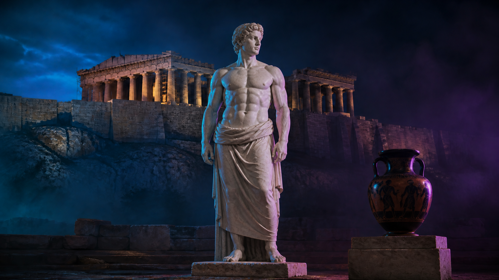
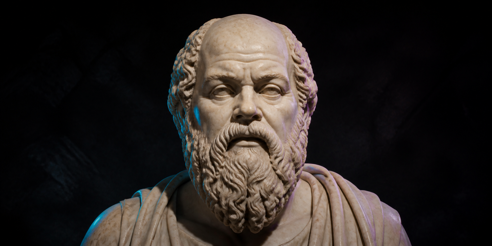
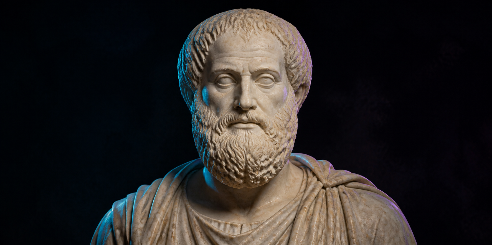
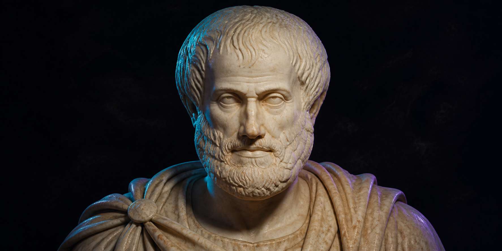
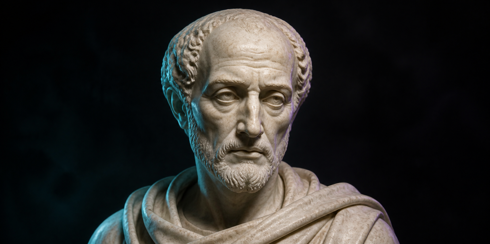

Na Antiguidade Clássica, pensar sobre o Belo não significava apenas perguntar “o que é bonito?”. A filosofia buscava compreender por que determinadas coisas eram consideradas belas e qual relação existia entre beleza, ordem, verdade e virtude.
O conceito estava ligado à ideia de que existe uma determinada organização ou qualidade capaz de produzir beleza.
A beleza está apenas na aparência?
Ou existe uma beleza que pode ser
compreendida pela razão?
A relação adequada entre as partes de um objeto, corpo ou construção contribuía para sua beleza.
Elementos diferentes poderiam formar um conjunto equilibrado e ordenado.
A própria ideia de cosmos remetia a um universo organizado, em oposição ao caos.
Na arte grega, especialmente na escultura e arquitetura, ideias como simetria, proporção e equilíbrio aparecem de maneira concreta.


Questionava o que realmente torna algo belo e relacionava o belo ao bom e ao útil em determinados contextos.

Distingue as belezas particulares da ideia do Belo em si, associando a experiência da beleza a uma elevação do pensamento.

Relaciona a beleza à ordem, à proporção e a uma determinada grandeza adequada ao objeto.

Na Antiguidade tardia, associa o belo à unidade e ao inteligível, ultrapassando a simples aparência material.
Para Platão, aquilo que é belo pode ser mais do que aquilo que simplesmente agrada aos olhos.
A representação do corpo humano podia expressar um ideal de equilíbrio e proporção.
Espaços públicos, templos e construções eram organizados de maneira a produzir uma experiência de ordem e harmonia.
Livros, obras filosóficas, materiais escolares, artigos e fontes digitais relacionadas ao pensamento antigo e à estética.
O conceito de Belo na Antiguidade Clássica, principalmente no pensamento grego e em suas manifestações artísticas e sociais.
Entender como os antigos definiam a beleza e como suas ideias aparecem na filosofia, arte e sociedade.
Para os antigos, a ideia de beleza
podia envolver muito mais do que
aparência.
Harmonia.
Proporção.
Ordem.
Virtude.
Verdade.
Pensar o Belo era também pensar
sobre o próprio ser humano e sobre
a maneira como ele organizava o mundo.